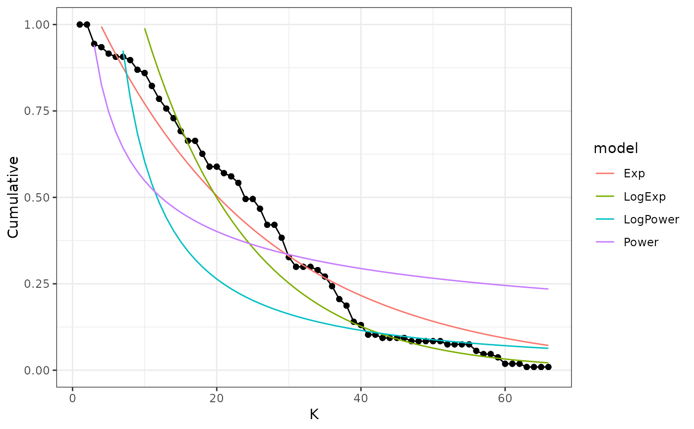

Degree distribution of the network
DegreeDistribution.RdThis function calculates the degree distribution of the network. First it fits exponential, power law and truncated power law distribution models, and calculates the AIC values to select the best fit, and finally it plots the degree distribution in a log log scale showing the three fitted models mentioned above against the observed distribution.
Arguments
- Network
a trophic network of class network
- scale
a character stating if the graph is on a log-log scale ("LogLog") or arithmetic scale ("arithmetic"), defaults to arithmetic
Value
exports three principal results: 1. A list with network degree distribution values and with the value of each fit model 2. A list with each model results and AIC of the distribution models 3. A Ghraph of the degree distribution with the models adjust In DDvalues, k represent the degree of the network and cumulative the probability that each specie could be have this degree (pk). Observation: In the graph, the zero values are not represented but this result are incorporate in the DF result
Examples
library(NetworkExtinction)
data("chilean_intertidal")
DegreeDistribution(chilean_intertidal)
#> Joining with `by = join_by(K, Cumulative, LogK, LogCum, Exp)`
#> Joining with `by = join_by(K, Cumulative, LogK, LogCum, Exp, LogExp, LogPower)`
#> Joining with `by = join_by(sigma, isConv, finTol, logLik, AIC, BIC, deviance,
#> df.residual, nobs, model, Normal.Resid, family, AICcNorm)`
#> Joining with `by = join_by(logLik, AIC, BIC, deviance, df.residual, nobs,
#> model, Normal.Resid, family, AICcNorm)`
#> Joining with `by = join_by(logLik, AIC, BIC, deviance, df.residual, nobs,
#> model, Normal.Resid, family, AICcNorm, null.deviance, df.null)`
#> $DDvalues
#> K Cumulative LogK LogCum Exp LogExp LogPower
#> 1 0 1.000000000 -Inf 0.00000000 1.17799968 NA NA
#> 2 1 1.000000000 0.0000000 0.00000000 1.12910048 1.83049523 9.44903010
#> 3 2 1.000000000 0.6931472 0.00000000 1.08223111 1.70946324 4.12868593
#> 4 3 0.943925234 1.0986123 -0.05770832 1.03730730 1.59643387 2.54374592
#> 5 4 0.934579439 1.3862944 -0.06765865 0.99424829 1.49087797 1.80399970
#> 6 5 0.915887850 1.6094379 -0.08786136 0.95297668 1.39230142 1.38190772
#> 7 6 0.906542056 1.7917595 -0.09811786 0.91341827 1.30024272 1.11147154
#> 8 7 0.906542056 1.9459101 -0.09811786 0.87550195 1.21427093 0.92455235
#> 9 8 0.897196262 2.0794415 -0.10848064 0.83915954 1.13398357 0.78824473
#> 10 9 0.869158879 2.1972246 -0.14022934 0.80432572 1.05900480 0.68479445
#> 11 10 0.859813084 2.3025851 -0.15104026 0.77093786 0.98898361 0.60381467
#> 12 11 0.822429907 2.3978953 -0.19549202 0.73893595 0.92359221 0.53884118
#> 13 12 0.785046729 2.4849066 -0.24201204 0.70826245 0.86252447 0.48564952
#> 14 13 0.757009346 2.5649494 -0.27837968 0.67886222 0.80549453 0.44136734
#> 15 14 0.728971963 2.6390573 -0.31612001 0.65068240 0.75223539 0.40397652
#> 16 15 0.691588785 2.7080502 -0.36876374 0.62367233 0.70249773 0.37201936
#> 17 16 0.663551402 2.7725887 -0.41014896 0.59778346 0.65604872 0.34441788
#> 18 17 0.663551402 2.8332133 -0.41014896 0.57296925 0.61267091 0.32035847
#> 19 18 0.626168224 2.8903718 -0.46813622 0.54918509 0.57216123 0.29921602
#> 20 19 0.588785047 2.9444390 -0.52969411 0.52638822 0.53433004 0.28050271
#> 21 20 0.588785047 2.9957323 -0.52969411 0.50453765 0.49900024 0.26383249
#> 22 21 0.570093458 3.0445224 -0.56195497 0.48359411 0.46600644 0.24889605
#> 23 22 0.560747664 3.0910425 -0.57848427 0.46351994 0.43519419 0.23544279
#> 24 23 0.542056075 3.1354942 -0.61238582 0.44427906 0.40641923 0.22326760
#> 25 24 0.495327103 3.1780538 -0.70253692 0.42583687 0.37954688 0.21220107
#> 26 25 0.495327103 3.2188758 -0.70253692 0.40816022 0.35445131 0.20210211
#> 27 26 0.467289720 3.2580965 -0.76080583 0.39121734 0.33101506 0.19285229
#> 28 27 0.420560748 3.2958369 -0.86616634 0.37497777 0.30912841 0.18435152
#> 29 28 0.420560748 3.3322045 -0.86616634 0.35941230 0.28868890 0.17651464
#> 30 29 0.383177570 3.3672958 -0.95925677 0.34449297 0.26960085 0.16926877
#> 31 30 0.327102804 3.4011974 -1.11748077 0.33019294 0.25177489 0.16255119
#> 32 31 0.299065421 3.4339872 -1.20709293 0.31648651 0.23512758 0.15630763
#> 33 32 0.299065421 3.4657359 -1.20709293 0.30334904 0.21958099 0.15049092
#> 34 33 0.299065421 3.4965076 -1.20709293 0.29075691 0.20506234 0.14505987
#> 35 34 0.289719626 3.5263605 -1.23884163 0.27868748 0.19150366 0.13997833
#> 36 35 0.271028037 3.5553481 -1.30553300 0.26711906 0.17884148 0.13521452
#> 37 36 0.242990654 3.5835189 -1.41473230 0.25603085 0.16701651 0.13074029
#> 38 37 0.205607477 3.6109179 -1.58178638 0.24540292 0.15597341 0.12653074
#> 39 38 0.186915888 3.6375862 -1.67709656 0.23521615 0.14566048 0.12256365
#> 40 39 0.140186916 3.6635616 -1.96477863 0.22545224 0.13602944 0.11881922
#> 41 40 0.130841121 3.6888795 -2.03377150 0.21609364 0.12703520 0.11527971
#> 42 41 0.102803738 3.7135721 -2.27493356 0.20712351 0.11863566 0.11192920
#> 43 42 0.102803738 3.7376696 -2.27493356 0.19852574 0.11079149 0.10875334
#> 44 43 0.093457944 3.7612001 -2.37024374 0.19028486 0.10346598 0.10573919
#> 45 44 0.093457944 3.7841896 -2.37024374 0.18238607 0.09662483 0.10287504
#> 46 45 0.093457944 3.8066625 -2.37024374 0.17481516 0.09023601 0.10015025
#> 47 46 0.093457944 3.8286414 -2.37024374 0.16755852 0.08426963 0.09755518
#> 48 47 0.084112150 3.8501476 -2.47560426 0.16060310 0.07869774 0.09508101
#> 49 48 0.084112150 3.8712010 -2.47560426 0.15393641 0.07349426 0.09271974
#> 50 49 0.084112150 3.8918203 -2.47560426 0.14754645 0.06863483 0.09046400
#> 51 50 0.084112150 3.9120230 -2.47560426 0.14142174 0.06409671 0.08830707
#> 52 51 0.084112150 3.9318256 -2.47560426 0.13555127 0.05985865 0.08624277
#> 53 52 0.074766355 3.9512437 -2.59338729 0.12992449 0.05590081 0.08426543
#> 54 53 0.074766355 3.9702919 -2.59338729 0.12453128 0.05220466 0.08236980
#> 55 54 0.074766355 3.9889840 -2.59338729 0.11936194 0.04875289 0.08055108
#> 56 55 0.074766355 4.0073332 -2.59338729 0.11440718 0.04552936 0.07880478
#> 57 56 0.056074766 4.0253517 -2.88106937 0.10965810 0.04251897 0.07712681
#> 58 57 0.046728972 4.0430513 -3.06339092 0.10510615 0.03970762 0.07551332
#> 59 58 0.046728972 4.0604430 -3.06339092 0.10074316 0.03708216 0.07396078
#> 60 59 0.037383178 4.0775374 -3.28653447 0.09656127 0.03463030 0.07246588
#> 61 60 0.018691589 4.0943446 -3.97968165 0.09255298 0.03234055 0.07102558
#> 62 61 0.018691589 4.1108739 -3.97968165 0.08871107 0.03020220 0.06963700
#> 63 62 0.018691589 4.1271344 -3.97968165 0.08502864 0.02820524 0.06829750
#> 64 63 0.009345794 4.1431347 -4.67282883 0.08149907 0.02634031 0.06700458
#> 65 64 0.009345794 4.1588831 -4.67282883 0.07811601 0.02459869 0.06575593
#> 66 65 0.009345794 4.1743873 -4.67282883 0.07487339 0.02297223 0.06454937
#> 67 66 0.009345794 4.1896547 -4.67282883 0.07176537 0.02145331 0.06338287
#> 68 67 0.000000000 4.2046926 -Inf 0.06878636 NA NA
#> Power
#> 1 NA
#> 2 1.5397399
#> 3 1.1281356
#> 4 0.9404615
#> 5 0.8265616
#> 6 0.7478031
#> 7 0.6890567
#> 8 0.6430028
#> 9 0.6056046
#> 10 0.5744268
#> 11 0.5478999
#> 12 0.5249602
#> 13 0.5048576
#> 14 0.4870455
#> 15 0.4711148
#> 16 0.4567525
#> 17 0.4437140
#> 18 0.4318054
#> 19 0.4208706
#> 20 0.4107822
#> 21 0.4014349
#> 22 0.3927412
#> 23 0.3846275
#> 24 0.3770311
#> 25 0.3698987
#> 26 0.3631844
#> 27 0.3568482
#> 28 0.3508555
#> 29 0.3451761
#> 30 0.3397832
#> 31 0.3346531
#> 32 0.3297650
#> 33 0.3251001
#> 34 0.3206417
#> 35 0.3163749
#> 36 0.3122862
#> 37 0.3083632
#> 38 0.3045950
#> 39 0.3009716
#> 40 0.2974837
#> 41 0.2941231
#> 42 0.2908819
#> 43 0.2877534
#> 44 0.2847309
#> 45 0.2818086
#> 46 0.2789810
#> 47 0.2762429
#> 48 0.2735898
#> 49 0.2710172
#> 50 0.2685210
#> 51 0.2660977
#> 52 0.2637435
#> 53 0.2614553
#> 54 0.2592299
#> 55 0.2570646
#> 56 0.2549566
#> 57 0.2529034
#> 58 0.2509026
#> 59 0.2489521
#> 60 0.2470497
#> 61 0.2451934
#> 62 0.2433814
#> 63 0.2416120
#> 64 0.2398834
#> 65 0.2381941
#> 66 0.2365426
#> 67 0.2349276
#> 68 NA
#>
#> $models
#> # A tibble: 4 × 6
#> logLik AIC BIC model Normal.Resid family
#> <dbl> <dbl> <dbl> <chr> <chr> <chr>
#> 1 83.1 -160. -154. Exp No Exponential
#> 2 13.4 -20.8 -14.2 Power No PowerLaw
#> 3 -27.5 61.0 67.5 LogExp No Exponential
#> 4 -80.8 168. 174. LogPower No PowerLaw
#>
#> $graph
#> Warning: Removed 20 rows containing missing values (`geom_line()`).

#>
#> $params
#> # A tibble: 8 × 6
#> term estimate std.error statistic p.value model
#> <chr> <dbl> <dbl> <dbl> <dbl> <chr>
#> 1 c 2.25 0.384 5.84 1.87e- 7 LogPower
#> 2 Beta -1.19 0.114 -10.4 1.90e-15 LogPower
#> 3 Beta -0.449 0.0402 -11.2 1.13e-16 Power
#> 4 c 1.54 0.150 10.3 3.63e-15 Power
#> 5 c 0.673 0.0928 7.25 6.68e-10 LogExp
#> 6 Lambda -0.0684 0.00241 -28.4 5.33e-38 LogExp
#> 7 Lambda -0.0424 0.00157 -27.0 2.31e-37 Exp
#> 8 c 0.164 0.0247 6.63 7.39e- 9 Exp
#>